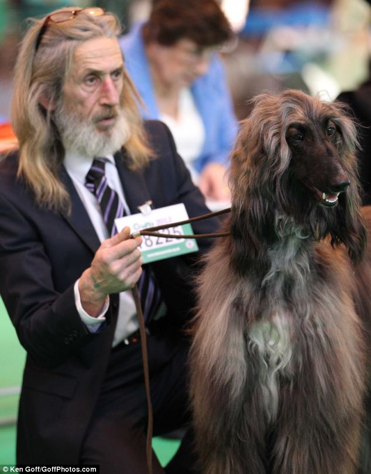

Customer Testimonials

In this company we strive for perfection and satisfication with our customers ensuring them they recieve a dog that will be with them till the end as a member of the family.
After each adoption we ask everyone to fill out a questionnaire within a few months to see how their new friend is getting on and how satisfied they were with the service here at Jazzy Paws.
Below are a few testimonials taken from customers showing how happy their new dog has made their home!
~Jessica Wild
"I've had Jessy about 10 months now and she's changed my life! I never knew I could love an animal this much. Thank you Jazzy Paws for rescuing her. "
~Mary Byrne
"Tyson is a big dog and I thought it would take a lot to handle and control him but Jazzy Paws already had him trained so well he is perfectly behaved!"
"I adoped Jack about 2 years ago from Jazzy Paws just as it was starting up. At first I was quite nervous about adopting a once injured stray but something in me just said I needed to do it. Two years later Jack has won 3 shows and is one of the top show dogs in Ireland! Jazzy Paws treated him with the best care and I owe them my best friend" ~Thomas Wilder

~Emma Crook
"Me and Princess play so much he is always full of energy! Even though he still limps I'm so happy Jazzy Paws fixed his injured leg so we can play all day"
~Jackson Reed
"Zeus is great for a guy like me, he travels anywhere I travel and he is always up for adventure. I would of never found a dog like him if it wasnt for the help of Jazzy Paws"
